主帖标题: [原创]每日预测沪市大盘方向
公历时间：2009年1月8日9时30分 星期四
农历时间：戊子年十二月十三巳时
干支：戊子年 乙丑月 癸丑日 丁巳时 (旬空：寅卯)
神煞：驿马—亥 桃花—午 日禄—子 贵人—卯，巳
兑宫：兑为泽（六冲） 兑宫：雷泽归妹（归魂）
六神 【本 卦】 【变 卦】
白虎 ▅▅ ▅▅ 父母丁未土 世 ▅▅ ▅▅ 父母庚戌土 应
螣蛇 ▅▅▅▅▅ 兄弟丁酉金 ○→ ▅▅ ▅▅ 兄弟庚申金
勾陈 ▅▅▅▅▅ 子孙丁亥水 ▅▅▅▅▅ 官鬼庚午火
朱雀 ▅▅ ▅▅ 父母丁丑土 应 ▅▅ ▅▅ 父母丁丑土 世
青龙 ▅▅▅▅▅ 妻财丁卯木 ▅▅▅▅▅ 妻财丁卯木
玄武 ▅▅▅▅▅ 官鬼丁巳火 ▅▅▅▅▅ 官鬼丁巳火
分析:涣散化回归.兑卦为喜悦之象,振荡,随心所欲,收敛,小心骗钱,互式家人卦为伦理之象,结构关系,涨升有序,化归妹卦为归帐之象,浮云蔽日,股市沉浮,哪来哪去.空化空方退神:空头能量迅速释放,衰退而竭,会止跌反弹,建议:半仓杀入.按照韩绯子提供预测股票体系的思路方法来看,动爻从阳变阴,肯定是收盘下跌为主.临腾蛇:小波浪曲线走势，突发、惊慌。本人的观点:到1850点支撑线看反弹的防守情况变化而定.属于个人观点!
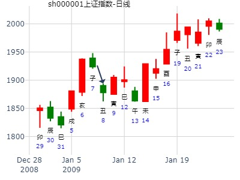
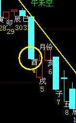
1月5日大盘。 兑之归妹，兄化退酉化申。先跌后涨。.md
时间: 2016-01-05 9时23分
干支: 乙未年戊子月丙戌日癸巳时 (旬空: 午未 )
兑为泽 雷泽归妹(归魂)
青龙 ▅▅ ▅▅ 父母未土 世 ▅▅ ▅▅ 父母戌土 应
玄武 ▅▅▅▅▅ 兄弟酉金 Ｏ→ ▅▅ ▅▅ 兄弟申金
白虎 ▅▅▅▅▅ 子孙亥水 ▅▅▅▅▅ 官鬼午火
腾蛇 ▅▅ ▅▅ 父母丑土 应 ▅▅ ▅▅ 父母丑土 世
勾陈 ▅▅▅▅▅ 妻财卯木 ▅▅▅▅▅ 妻财卯木
朱雀 ▅▅▅▅▅ 官鬼巳火 ▅▅▅▅▅ 官鬼巳火
九五：孚于剥，有厉。
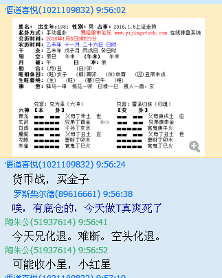
风生水起，上证3月卦。兑之归妹。经典。.md
时间: 2022-02-27 17时55分
干支: 壬寅年壬寅月辛亥日丁酉时 (旬空: 寅卯 )
兑为泽 雷泽归妹(归魂)
六神 伏神 本 卦 变 卦
腾蛇 ▅▅ ▅▅ 父母未土 世 ▅▅ ▅▅ 父母戌土 应
勾陈 ▅▅▅▅▅ 兄弟酉金 Ｏ→ ▅▅ ▅▅ 兄弟申金
朱雀 ▅▅▅▅▅ 子孙亥水 ▅▅▅▅▅ 官鬼午火
青龙 ▅▅ ▅▅ 父母丑土 应 ▅▅ ▅▅ 父母丑土 世
玄武 ▅▅▅▅▅ 妻财卯木 ▅▅▅▅▅ 妻财卯木
白虎 ▅▅▅▅▅ 官鬼巳火 ▅▅▅▅▅ 官鬼巳火
辰未申酉暴跌。旬空出空挨宰。
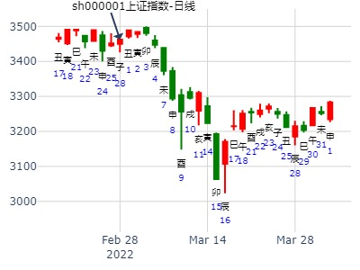
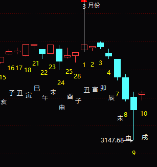
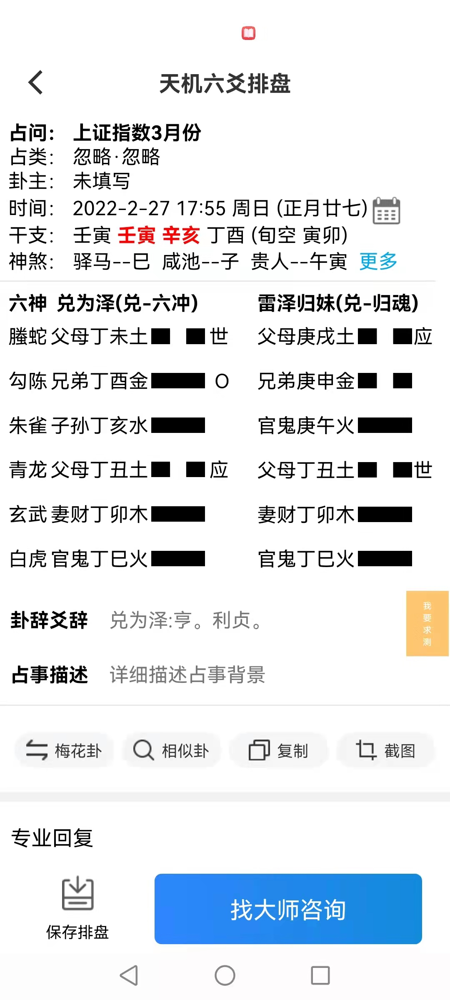
方式：手工指定 占事：3月
北京时间：2017年3月1日13时20分 星期三
丁酉年 壬寅月 丁亥日 (旬空:午未)
兑为泽(六冲) 兑－雷泽归妹(归魂)
六神 本 卦 变 卦
青龙 ▅ ▅ 父母未土 世 ▅ ▅ 父母戌土 应
玄武 ▅▅▅ 兄弟酉金 ○→ ▅ ▅ 兄弟申金
白虎 ▅▅▅ 子孙亥水 ▅▅▅ 官鬼午火
螣蛇 ▅ ▅ 父母丑土 应 ▅ ▅ 父母丑土 世
勾陈 ▅▅▅ 妻财卯木 ▅▅▅ 妻财卯木
朱雀 ▅▅▅ 官鬼巳火 ▅▅▅ 官鬼巳火
月卦，欢迎批断。
与2022-02-27卦月日一样，一个是妻财旬空暴跌。一个是横盘
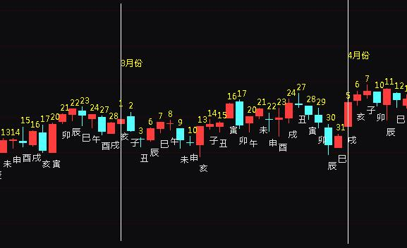
钱江摩托4月走势？
出生：2020 年 性别：男 占事：没填
排卦：元亨利贞网六爻在线排盘系统 http://www.china95.net
公历起卦时间：2020年4月3日10时53分 (电脑自动)
干支：庚子年 己卯月 丙子日 癸巳时 （日空：申酉）
神煞：驿马－寅 桃花－酉 日禄－巳 贵人－酉，亥
兑宫：兑为泽 (六冲) 兑宫：雷泽归妹 (归魂)
青龙 父母丁未土 ▅▅ ▅▅ 世 父母庚戌土 ▅▅ ▅▅ 应
玄武 兄弟丁酉金 ▅▅▅▅▅ ○→ 兄弟庚申金 ▅▅ ▅▅
白虎 子孙丁亥水 ▅▅▅▅▅ 官鬼庚午火 ▅▅▅▅▅
螣蛇 父母丁丑土 ▅▅ ▅▅ 应 父母丁丑土 ▅▅ ▅▅ 世
勾陈 妻财丁卯木 ▅▅▅▅▅ 妻财丁卯木 ▅▅▅▅▅
朱雀 官鬼丁巳火 ▅▅▅▅▅ 官鬼丁巳火 ▅▅▅▅▅
当天即是高点。虽然兄弟月破。但辰月不破。
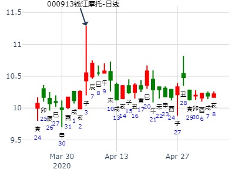
主帖标题: [原创]每日预测深沪两市大盘方向
公历时间：2008年5月28日9时30分 星期三
干支：戊子年 丁巳月 戊辰日 丁巳时 (旬空：戌亥)
兑宫：兑为泽（六冲） 兑宫：雷泽归妹（归魂）
朱雀 ▅▅ ▅▅ 父母丁未土 世 ▅▅ ▅▅ 父母庚戌土 应
青龙 ▅▅▅▅▅ 兄弟丁酉金 ○→ ▅▅ ▅▅ 兄弟庚申金
玄武 ▅▅▅▅▅ 子孙丁亥水 ▅▅▅▅▅ 官鬼庚午火
白虎 ▅▅ ▅▅ 父母丁丑土 应 ▅▅ ▅▅ 父母丁丑土 世
螣蛇 ▅▅▅▅▅ 妻财丁卯木 ▅▅▅▅▅ 妻财丁卯木
勾陈 ▅▅▅▅▅ 官鬼丁巳火 ▅▅▅▅▅ 官鬼丁巳火
分析:六冲化归魂:先散后逆转回归.兑为喜悦之象,随心所欲,收敛,小心骗钱,互式风火家人为结构关系,涨升有序,通畅，化雷泽归妹为归帐之象，浮云蔽日，股市沉浮，哪类哪去．空方为动爻，被日合住，日内无大跌，但仍为下降趋道，不跳水而已．但是怕等到６月３日星期二冲开，狂跌下去！建议：半仓杀入，跟随热点，要求上升通道为准！属于个人观点！
王注：兄弟发动，暂时今天被日绊，今天还能涨。
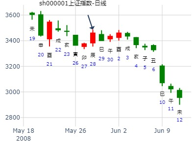
主帖标题: [原创]每日预测深沪两市大盘方向
公历时间：2008年6月26日9时30分 星期四
干支：戊子年 戊午月 丁酉日 乙巳时 (旬空：辰巳)
兑宫：兑为泽（六冲） 兑宫：雷泽归妹（归魂）
青龙 ▅▅ ▅▅ 父母丁未土 世 ▅▅ ▅▅ 父母庚戌土 应
玄武 ▅▅▅▅▅ 兄弟丁酉金 ○→ ▅▅ ▅▅ 兄弟庚申金
白虎 ▅▅▅▅▅ 子孙丁亥水 ▅▅▅▅▅ 官鬼庚午火
螣蛇 ▅▅ ▅▅ 父母丁丑土 应 ▅▅ ▅▅ 父母丁丑土 世
勾陈 ▅▅▅▅▅ 妻财丁卯木 ▅▅▅▅▅ 妻财丁卯木
朱雀 ▅▅▅▅▅ 官鬼丁巳火 ▅▅▅▅▅ 官鬼丁巳火
分析:六冲化归魂为涣散化逆转回归.兑为喜悦之象,振荡为主,随心所欲,收敛,小心骗钱,互式风火家人为结构关系,涨升有序,通畅，化雷泽归妹为归帐之象，浮云蔽日，股市沉浮，哪来哪去．空方化空方退神：空头能量迅速释放，衰退而竭，会止跌反弹，建议：半仓杀入．今天北京时间：０：１６点看美国大盘反弹信号确立，不排除中国收小阳或小阴为主，高走底走的可能性较大一些．本人看好两个行业：房地和钢铁，是明天大盘的热点！属于个人观点！
[此贴子已经被作者于2008-6-26 0:30:30编辑过]
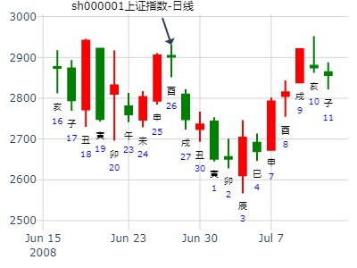
占事: 2014,上证指数低点在哪？
起卦方式：手动摇卦 周易天地
公历时间：2014年6月8日9时10分
干支：甲午年 庚午月 庚戌日 辛巳时
旬空：辰巳 戌亥 寅卯 申酉
兑宫：兑为泽（六冲） 兑宫：雷泽归妹（归魂）
六神 【本 卦】 【变 卦】
螣蛇 ▄▄ ▄▄ 父母丁未土 世 ▄▄ ▄▄ 父母庚戌土 应
勾陈 ▄▄▄▄▄ 兄弟丁酉金 O-> ▄▄ ▄▄ 兄弟庚申金
朱雀 ▄▄▄▄▄ 子孙丁亥水 ▄▄▄▄▄ 官鬼庚午火
青龙 ▄▄ ▄▄ 父母丁丑土 应 ▄▄ ▄▄ 父母丁丑土 世
玄武 ▄▄▄▄▄ 妻财丁卯木 ▄▄▄▄▄ 妻财丁卯木
白虎 ▄▄▄▄▄ 官鬼丁巳火 ▄▄▄▄▄ 官鬼丁巳火
忽悠忽悠，参考自负！
丑破在未!，首选未月，酉动于卦，泄丑，申酉月也是有可能的........
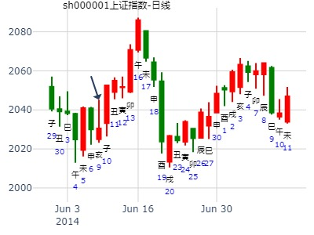
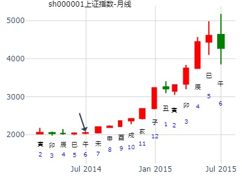
主题：7月11日黄金的走势 1339
甲午 辛未 癸未 丁巳 (申酉空) 甲午年六月十五(2014/07/11 09:06:27)
兑为泽 雷泽归妹
白虎 父母己未 ∥ 兑 父母壬戌 ∥ 应
腾蛇 兄弟辛酉 ○ 兄弟庚申 ∥
勾陈 子孙癸亥 ／ 官鬼戊午 ／
朱雀 父母癸丑 ∥ 应 父母癸丑 ∥ 兑
青龙 妻财乙卯 ／ 妻财乙卯 ／
玄武 官鬼丁巳 ／ 官鬼丁巳 ／
兄弟旬空，短线还涨一天。
申酉空，当天还能涨。隔天暴跌。
占事：中粮地产本周还会涨不？
公历起卦时间：2014年7月14日14时6分 (在线摇卦)
干支：甲午年 辛未月 丙戌日 乙未时 （日空：午未）
神煞：驿马－申 桃花－卯 日禄－巳 贵人－酉，亥
兑宫：兑为泽 (六冲) 兑宫：雷泽归妹 (归魂)
六神 伏神 本 卦 变 卦
青龙 父母丁未土 ▅▅ ▅▅ 世 父母庚戌土 ▅▅ ▅▅ 应
玄武 兄弟丁酉金 ▅▅▅▅▅ ○→ 兄弟庚申金 ▅▅ ▅▅
白虎 子孙丁亥水 ▅▅▅▅▅ 官鬼庚午火 ▅▅▅▅▅
腾蛇 父母丁丑土 ▅▅ ▅▅ 应 父母丁丑土 ▅▅ ▅▅ 世
勾陈 妻财丁卯木 ▅▅▅▅▅ 妻财丁卯木 ▅▅▅▅▅
朱雀 官鬼丁巳火 ▅▅▅▅▅ 官鬼丁巳火 ▅▅▅▅▅
初看：丑日冲实未土，要跌。今天戌日，可能是合起了卯木。
亥日子孙值日。涨。寅日冲散退神，又大涨。巳日冲子孙亥水日破，看跌
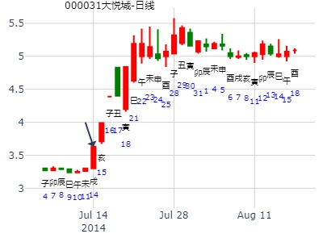
占事：8月大盘是否会涨？ 作者：阿晖
起卦方式：手动摇卦 易经股市论坛
公历时间：2014年8月2日14时13分
干 支：甲午年 辛未月 乙巳日 癸未时
旬 空：辰巳 戌亥 (寅卯) 申酉
兑宫：兑为泽（六冲） 兑宫：雷泽归妹（归魂）
玄武 ▄▄ ▄▄ 父母丁未土 世 ▄▄ ▄▄ 父母庚戌土 应
白虎 ▄▄▄▄▄ 兄弟丁酉金 O-> ▄▄ ▄▄ 兄弟庚申金
螣蛇 ▄▄▄▄▄ 子孙丁亥水 ▄▄▄▄▄ 官鬼庚午火
勾陈 ▄▄ ▄▄ 父母丁丑土 应 ▄▄ ▄▄ 父母丁丑土 世
朱雀 ▄▄▄▄▄ 妻财丁卯木 ▄▄▄▄▄ 妻财丁卯木
青龙 ▄▄▄▄▄ 官鬼丁巳火 ▄▄▄▄▄ 官鬼丁巳火
到了8月，申金值月，但是化退，却是横盘。
亥水在兄弟动的情况下，逢冲可归为暗动？
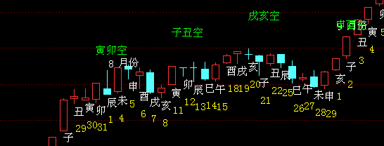
主帖标题: [原创]每日预测深沪两市大盘方向
公历时间：2008年9月5日9时30分 星期五
干支：戊子年 庚申月 戊申日 丁巳时 (旬空：寅卯)
兑宫：兑为泽（六冲） 兑宫：雷泽归妹（归魂）
朱雀 ▅▅ ▅▅ 父母丁未土 世 ▅▅ ▅▅ 父母庚戌土 应
青龙 ▅▅▅▅▅ 兄弟丁酉金 ○→ ▅▅ ▅▅ 兄弟庚申金
玄武 ▅▅▅▅▅ 子孙丁亥水 ▅▅▅▅▅ 官鬼庚午火
白虎 ▅▅ ▅▅ 父母丁丑土 应 ▅▅ ▅▅ 父母丁丑土 世
螣蛇 ▅▅▅▅▅ 妻财丁卯木 ▅▅▅▅▅ 妻财丁卯木
勾陈 ▅▅▅▅▅ 官鬼丁巳火 ▅▅▅▅▅ 官鬼丁巳火
分析:六冲化归魂:涣散化回归.兑为喜悦之象,振荡,随心所欲,收敛,小心骗钱,互式风火家人为结构关系,涨升有序,化雷泽归妹为归帐之象,升跌不定,浮云蔽日,股市沉浮,哪来哪去.空化空方退神:空头能量迅速释放,衰退而竭,会止跌反弹,建议:半仓杀入.属于个人观点!
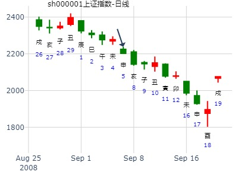
主帖标题: 主题：9月9日黄金的走势 1258
主题：9月9日黄金的走势
甲午 癸酉 癸未 丁巳 (申酉空) 甲午年八月十六(2014/09/09 10:15:44)
兑为泽 雷泽归妹
白虎 父母己未 ∥ 兑 父母壬戌 ∥ 应
腾蛇 兄弟辛酉 ○ 兄弟庚申 ∥
勾陈 子孙癸亥 ／ 官鬼戊午 ／
朱雀 父母癸丑 ∥ 应 父母癸丑 ∥ 兑
青龙 妻财乙卯 ／ 妻财乙卯 ／
玄武 官鬼丁巳 ／ 官鬼丁巳 ／

主帖标题: 10月上证指数特殊起卦。。。。。准确率69%
出生年：年 性别：男 占事: 15
起卦方式：手工指定
公历时间：2009年10月15日9时20分
干支：己丑年 甲戌月 癸巳日 丁巳时
旬空：午未 申酉 午未 子丑
神煞：驿马─亥 桃花─午 日禄─子 贵人─巳，卯
兑宫：兑为泽（六冲） 兑宫：雷泽归妹（归魂）
六神 【本 卦】 【变 卦】
白虎 ▄▄ ▄▄ 父母丁未土 世 ▄▄ ▄▄ 父母庚戌土 应
螣蛇 ▄▄▄▄▄ 兄弟丁酉金 O-> ▄▄ ▄▄ 兄弟庚申金
勾陈 ▄▄▄▄▄ 子孙丁亥水 ▄▄▄▄▄ 官鬼庚午火
朱雀 ▄▄ ▄▄ 父母丁丑土 应 ▄▄ ▄▄ 父母丁丑土 世
青龙 ▄▄▄▄▄ 妻财丁卯木 ▄▄▄▄▄ 妻财丁卯木
玄武 ▄▄▄▄▄ 官鬼丁巳火 ▄▄▄▄▄ 官鬼丁巳火
注：此贴为特殊起卦，不合卦理，仅供娱乐
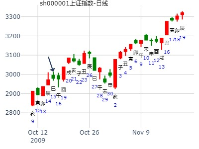
赵哲案例：
研判所持有600064南京高科何日出手。取得分析式。
时间: 2000-11-08
干支: 庚辰年丁亥月庚午日 (旬空: 戌亥 )
兑为泽 雷泽归妹(归魂)
六神 伏神 本 卦 变 卦
腾蛇 ▅▅ ▅▅ 父母未土 世 ▅▅ ▅▅ 父母戌土 应
勾陈 ▅▅▅▅▅ 兄弟酉金 Ｏ→ ▅▅ ▅▅ 兄弟申金
朱雀 ▅▅▅▅▅ 子孙亥水 ▅▅▅▅▅ 官鬼午火
青龙 ▅▅ ▅▅ 父母丑土 应 ▅▅ ▅▅ 父母丑土 世
玄武 ▅▅▅▅▅ 妻财卯木 ▅▅▅▅▅ 妻财卯木
白虎 ▅▅▅▅▅ 官鬼巳火 ▅▅▅▅▅ 官鬼巳火
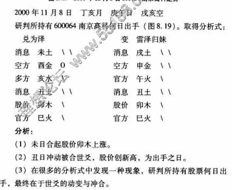
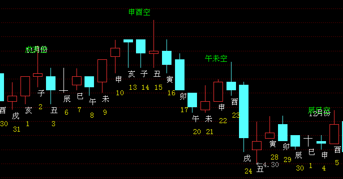
分析：1。未日合起股价卯木上涨。
2。丑日冲动被合世爻，股份创新高，为出手之日。
3。在很多的分析式中发现一种现象，研判所持有股票何日出手，最终在于世爻的动变与冲合。
主帖标题: 一卦三解——5日大盘回调
本帖最后由 tjlr 于 2019-11-4 15:34 编辑
起卦公历：2019年11月4日10时34分(北京时间)
起卦农历：二○一九年 十月 初八日 巳时。
干支： 己亥年 甲戌月 乙巳日 辛巳时 (卦身：亥)午
主变卦 兑为泽(兑宫) 之 雷泽归妹(兑宫) [空亡:寅、卯]
玄武 ━ ━ 父母未土 世 ━ ━ 父母戌土 应
白虎 ━━━ ○兄弟酉金 ━ ━ 兄弟申金
螣蛇 ━━━ 子孙亥水 ━━━ 官鬼午火
勾陈 ━ ━ 父母丑土 应 ━ ━ 父母丑土 世
朱雀 ━━━ 妻财卯木 ━━━ 妻财卯木
青龙 ━━━ 官鬼巳火 ━━━ 官鬼巳火
◇九五:孚于剥，有厉。 象曰：孚于剥，位正当也。
盘后总结：
断反。问题出在对亥水是暗动，还是散破的判断上，从盘面实际走势可以看出，亥水有暗动作用，否则盘中不可能拉起来。但午盘的回调，用兄子同动来解释，又不太恰当。兄子同动，生力巨大，应该大涨，但午盘不涨反调，这个暗动还是有点问题。
如果把亥暗动与破结合起来看，可能更顺一点。一、爻遇冲即动。二、旺爻遇冲可导致大行情，三、弱爻则行情不久。此总结不知如何，留存待验。但无论如何，爻遇冲即动的说法，还是一个全新概念，值得珍惜。
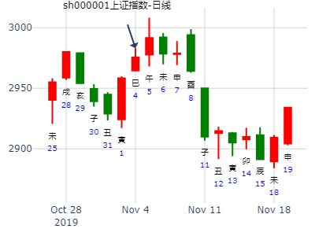
主帖标题: 世爻官鬼动化退及化伏呤是下跌之象
一：兄弟旺动化退，先跌后涨的玄机。
占事：卯时摇卦测今日锌涨跌
公历起卦时间：2011年12月8日6时16分
干支：辛卯年 庚子月 丁酉日 癸卯时 （日空：辰巳）
神煞：驿马－亥 桃花－午 日禄－午 贵人－酉，亥
兑宫：兑为泽 (六冲) 兑宫：雷泽归妹 (归魂)
六神 伏神 本 卦 变 卦
青龙 父母丁未土 ▅▅ ▅▅ 世 父母庚戌土 ▅▅ ▅▅ 应
玄武 兄弟丁酉金 ▅▅▅▅▅ ○→ 兄弟庚申金 ▅▅ ▅▅
白虎 子孙丁亥水 ▅▅▅▅▅ 官鬼庚午火 ▅▅▅▅▅
腾蛇 父母丁丑土 ▅▅ ▅▅ 应 父母丁丑土 ▅▅ ▅▅ 世
勾陈 妻财丁卯木 ▅▅▅▅▅ 妻财丁卯木 ▅▅▅▅▅
朱雀 官鬼丁巳火 ▅▅▅▅▅ 官鬼丁巳火 ▅▅▅▅▅
分析：六冲不吉，酉兄弟临是发动不吉，是下跌之象。但是酉动化申化退，为兄弟化退，有先跌后涨之象。当然，由于酉兄弟临日，所以开盘必有一跌。
实际：如下面分时图，就是低开，先跌，再涨的。
注意：此卦极空间断成下跌。如果以前收盘价来看，断下跌也无妨，但是那对操作没有帮助。如果按前面分析，断成先跌后涨，则可指导实战。
实际走势：锌大幅低开于15730，震荡回落至15640，小双底后先是震荡回升至均价线上方，然后突然拉升百点，午收15805。15时锌收15775，形成低开高收的阳线。
关于六爻卦中兄弟动变的市场含义之一兄弟动变含义简述：--张三汉
兄化进—大跌之兆。
兄化退—先跌后升，止跌反弹。
兄化父—跌势连续不断。
兄化官—先跌后涨，因兄有官制，空头力量不能发挥。
兄化财—有涨有跌。世动化财涨，但要速求，迟则无。日建财冲世兄涨。（财来冲世合世克世，皆是财与我有情，必涨，必得）
兄化子—先跌后涨。兄子同动，则兄不克财，涨。
兄化空—先跌后涨，空头力量先有释放的过程。
兄化墓—先跌后涨，兄弟入墓不劫财也。
兄临日—基本会跌，结果卦中动爻信息。
断卦原则：日月为大环境，动爻为涨跌信息。以动爻为主要判断依据。兄弟是空方的代表，代表下跌的能量与指数的回落。
这是基本定性与判断。
不过，事情远没有这样简单。
兄弟持世临日月旺动，这肯定是空方肆虐，下跌之信息。
但是，如果：
兄弟旺动化退化墓，如何断呢？
兄弟持世，财临日月来冲合世爻，如何断呢？
兄弟动化进却又化入墓，什么意思？
兄弟动而化空化破，又是什么意思？单纯的理论说教是苍白的。实战检验过的理论才是最有说服力的。
一：兄弟旺动化退，先跌后涨的玄机。占事：卯时摇卦测今日锌涨跌
公历起卦时间：2011年12月8日6时16分
干支：辛卯年 庚子月 丁酉日 癸卯时 （日空：辰巳）
神煞：驿马－亥 桃花－午 日禄－午 贵人－酉，亥 兑宫：兑为泽 (六冲) 兑宫：雷泽归妹 (归魂)
六神 伏神 本 卦 变 卦
青龙 父母丁未土 ▅▅ ▅▅ 世 父母庚戌土 ▅▅ ▅▅ 应
玄武 兄弟丁酉金 ▅▅▅▅▅ ○→ 兄弟庚申金 ▅▅ ▅▅
白虎 子孙丁亥水 ▅▅▅▅▅ 官鬼庚午火 ▅▅▅▅▅
腾蛇 父母丁丑土 ▅▅ ▅▅ 应 父母丁丑土 ▅▅ ▅▅ 世
勾陈 妻财丁卯木 ▅▅▅▅▅ 妻财丁卯木 ▅▅▅▅▅
朱雀 官鬼丁巳火 ▅▅▅▅▅ 官鬼丁巳火 ▅▅▅▅▅
分析：六冲不吉，酉兄弟临是发动不吉，是下跌之象。但是酉动化申化退，为兄弟化退，有先跌后涨之象。当然，由于酉兄弟临日，所以开盘必有一跌。
实际：如下面分时图，就是低开，先跌，再涨的。
注意：此卦极空间断成下跌。如果以前收盘价来看，断下跌也无妨，但是那对操作没有帮助。如果按前面分析，断成先跌后涨，则可指导实战。实际走势：锌大幅低开于15730，震荡回落至15640，小双底后先是震荡回升至均价线上方，然后突然拉升百点，午收15805。15时锌收15775，形成低开高收的阳线。
二：兄弟旺动化空化墓化回头克，是先跌后涨之象
例1：占事：7日卯时测铜涨跌
公历起卦时间：2011年12月7日6时30分
干支：辛卯年 己亥月 丙申日 辛卯时 （日空：辰巳）
神煞：驿马－寅 桃花－酉 日禄－巳 贵人－酉，亥 坎宫：泽火革 震宫：泽雷随 (归魂)
六神 伏神 本 卦 变 卦
青龙 官鬼丁未土 ▅▅ ▅▅ 官鬼丁未土 ▅▅ ▅▅ 应
玄武 父母丁酉金 ▅▅▅▅▅ 父母丁酉金 ▅▅▅▅▅
白虎 兄弟丁亥水 ▅▅▅▅▅ 世 兄弟丁亥水 ▅▅▅▅▅
腾蛇 妻财戊午火 兄弟己亥水 ▅▅▅▅▅ ○→ 官鬼庚辰土 ▅▅ ▅▅ 世
勾陈 官鬼己丑土 ▅▅ ▅▅ 子孙庚寅木 ▅▅ ▅▅
朱雀 子孙己卯木 ▅▅▅▅▅ 应 兄弟庚子水 ▅▅▅▅▅
分析：世亥兄弟持世本当论跌。但是以动爻信息为主。亥兄弟动化辰官鬼化空化入墓，说明空头力量因动而衰，是先跌后涨之象。亥在主卦动，是先跌，化空化墓，是后跌也。实际：铜高开于57960，稍上行即开始回落，至11点时见低点57770，而后反弹，下午继续大涨，收于58360，较前结上涨了840点。
例2： 再如：同时测橡胶走势，也有兄弟动化官鬼回头克，也是先跌后大涨也。
出占事：7日卯时测橡胶
公历起卦时间：2011年12月7日6时34分
干支：辛卯年 己亥月 丙申日 辛卯时 （日空：辰巳）
神煞：驿马－寅 桃花－酉 日禄－巳 贵人－酉，亥
坎宫：地水师 (归魂) 坎宫：水泽节 (六合)
六神 伏神 本 卦 变 卦
青龙 父母癸酉金 ▅▅ ▅▅ 应 兄弟戊子水 ▅▅ ▅▅
玄武 兄弟癸亥水 ▅▅ ▅▅ ╳→ 官鬼戊戌土 ▅▅▅▅▅
白虎 官鬼癸丑土 ▅▅ ▅▅ 父母戊申金 ▅▅ ▅▅ 应
腾蛇 妻财戊午火 ▅▅ ▅▅ 世 官鬼丁丑土 ▅▅ ▅▅
勾陈 官鬼戊辰土 ▅▅▅▅▅ 子孙丁卯木 ▅▅▅▅▅
朱雀 子孙戊寅木 ▅▅ ▅▅ ╳→ 妻财丁巳火 ▅▅▅▅▅ 世
分析：午财持世，寅木子孙动化巳财，此高开上涨之象。但是寅子孙动化巳化空，后市有回落。五爻亥兄弟旺动，也有下跌之象，但是亥动化戍回头克，这是兄弟受制无力做空之象，则必先跌后涨也。又，卦变六合，吉象。
注意：寅木动化巳，申日，本当三刑的，但是亥月合寅，合解了冲刑，所以三刑不成立。所以还是上涨了。如果不是亥月而是子月，则可论刑了。实际走势：橡胶高开于26285，小幅上行后即震荡回落，至11点时见低点26150，随后强烈反弹，下午继续大涨，收于26730，较前结的25945上涨了785点，涨得太多了。
例3：
再如：此为电脑随机卦
占事：锌目前15715，至15时涨跌？
公历起卦时间：2011年12月7日11时15分 (电脑自动)
干支：辛卯年 己亥月 丙申日 甲午时 （日空：辰巳）
神煞：驿马－寅 桃花－酉 日禄－巳 贵人－酉，亥
艮宫：火泽睽 坤宫：雷天大壮 (六冲)
六神 伏神 本 卦 变 卦
青龙 父母己巳火 ▅▅▅▅▅ ○→ 兄弟庚戌土 ▅▅ ▅▅
玄武 妻财丙子水 兄弟己未土 ▅▅ ▅▅ 子孙庚申金 ▅▅ ▅▅
白虎 子孙己酉金 ▅▅▅▅▅ 世 父母庚午火 ▅▅▅▅▅ 世
腾蛇 兄弟丁丑土 ▅▅ ▅▅ ╳→ 兄弟甲辰土 ▅▅▅▅▅
勾陈 官鬼丁卯木 ▅▅▅▅▅ 官鬼甲寅木 ▅▅▅▅▅
朱雀 父母丁巳火 ▅▅▅▅▅ 应 妻财甲子水 ▅▅▅▅▅ 应
分析：子孙持世，旺，有涨。丑兄弟动化辰化空化进化墓了，兄弟无力之象，不利空头。巳父母动化戍兄弟也是化入墓，则巳火父母不克酉金子孙，利多不利空。同时，巳酉丑三合金局，合成子孙局了，是必涨之象。
实际走势：预测后几分钟，锌突然暴拉至15800上方，后震荡整理，收于15775。上涨较多啊！
分享：
主帖标题: 上周奉献的两卦有人把握没呀？？再送来一卦！嘻嘻嘻……
凤凰传媒近期涨跌？
公历时间：2011年12月15日18时23分 农历时间：辛卯年 十一月二十一日酉时
干支：辛卯年 壬子月 甲辰日 癸酉时
旬空：辰巳 子丑 寅卯 戌亥
神煞：驿马─寅 桃花─酉 日禄─寅 贵人─丑，未
兑宫：兑为泽（六冲） 兑宫：雷泽归妹（归魂）
六神 【本 卦】 【变 卦】
玄武 ▄▄ ▄▄ 父母丁未土 世 ▄▄ ▄▄ 父母庚戌土 应
白虎 ▄▄▄▄▄ 兄弟丁酉金 O-> ▄▄ ▄▄ 兄弟庚申金
螣蛇 ▄▄▄▄▄ 子孙丁亥水 ▄▄▄▄▄ 官鬼庚午火
勾陈 ▄▄ ▄▄ 父母丁丑土 应 ▄▄ ▄▄ 父母丁丑土 世
朱雀 ▄▄▄▄▄ 妻财丁卯木 ▄▄▄▄▄ 妻财丁卯木
青龙 ▄▄▄▄▄ 官鬼丁巳火 ▄▄▄▄▄ 官鬼丁巳火
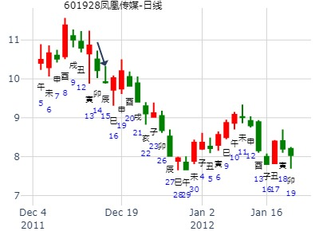
依然是相同观点：熊市行情只能短线狙击！
此卦：世爻不美，财空！ 主要看动爻——兄动化退逢日合是不退也！明日巳日冲起子孙或能有点行情……见底可买切勿追高！！
参考：
丙戌年丙申月丙寅日（戌亥），占沪场权证06年8月9午日走势，兑之归妹，+2分。